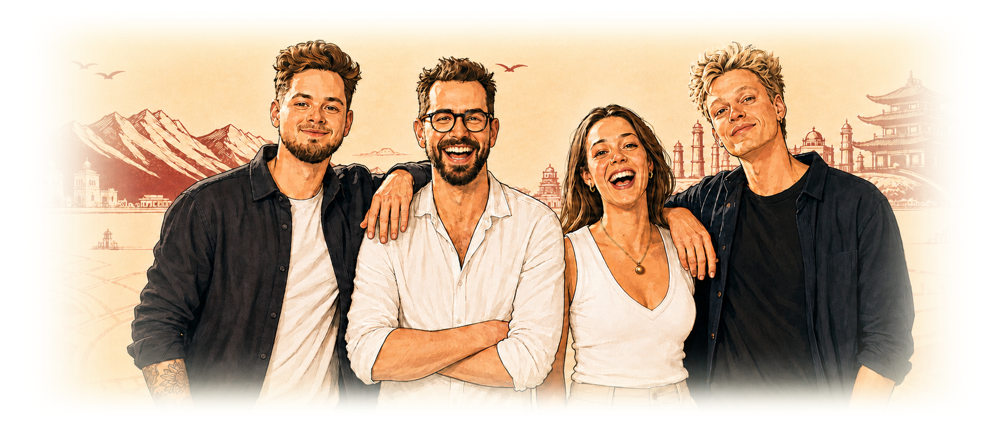

Om Næveklubben

Hvordan det startede
Vi er Næveklubben – Isak, Nick, Patrick og Villa – fire datamatikerstuderende på 2. semester på EK med en fælles svaghed for gode steder, store oplevelser og byliv med puls.
Tilsammen har vi mere end 25 års erfaring fra servicebranchen og det københavnske natteliv. Vi har med andre ord oplevet byen fra begge sider af bardisken og ved, hvad der forvandler et almindeligt besøg til en oplevelse, man faktisk fortæller videre om.
Som vaskeægte livsnydere går vi gerne den ekstra omvej for den bedste cocktail, den hyggeligste café eller den skjulte perle, der endnu ikke er blevet overrendt.
Navnet opstod under vores første semesterprojekt, da en samarbejdskontrakt krævede en plan for konflikthåndtering. Det første forslag var kamp til døden, men efter nærmere overvejelse landede vi på nævekamp – en langt mere diplomatisk løsning. Alt sammen i spøg, naturligvis. Heldigvis har god mad og kolde drikke indtil videre løst de fleste uenigheder. Her deler vi vores favoritter, erfaringer og bedste fund, så du kan springe turistfælderne over og gå direkte til de oplevelser, der gør byen værd at bruge.